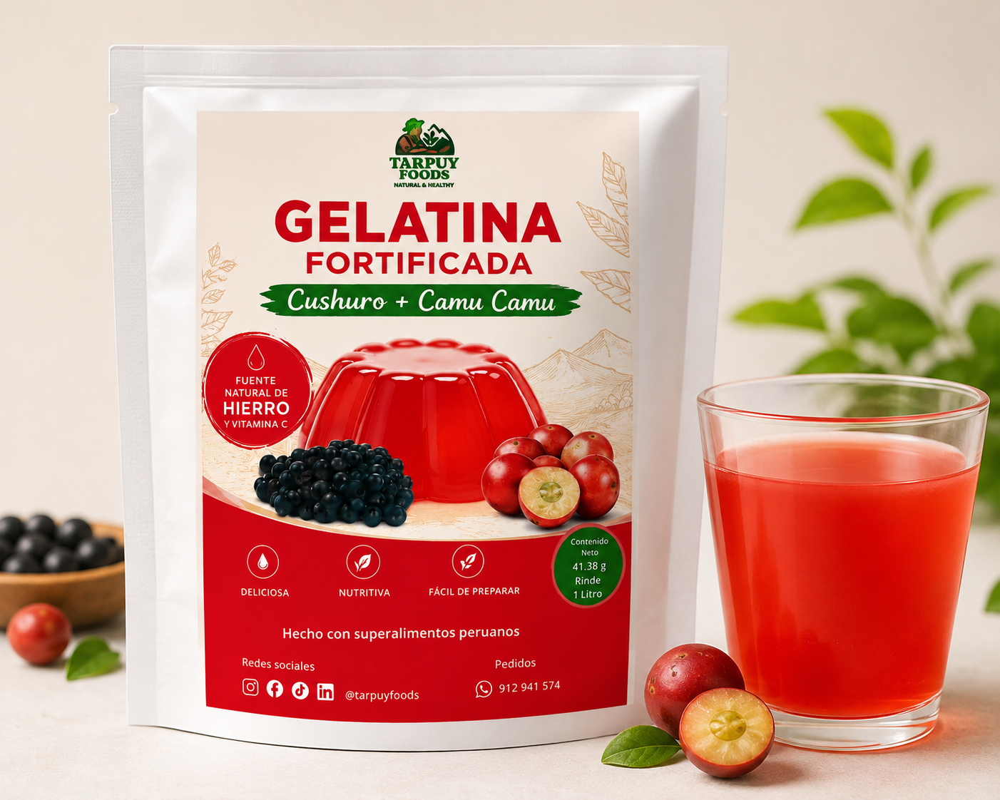
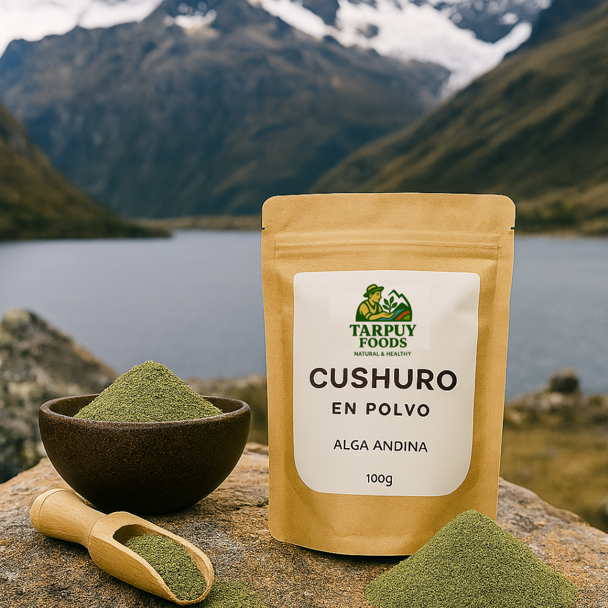

Nuestros Superfoods
Descubre la nutrición ancestral de los Andes
Cushuro y Tarwi
Dos superfoods excepcionales que han sido la base de la alimentación andina por siglos, ahora disponibles para nutrir tu vida moderna.

Cushuro
El cushuro es un alga de agua dulce que crece en las lagunas andinas a más de 3,500 metros de altura. Es considerado uno de los superfoods más nutritivos del mundo.
Beneficios Nutricionales:
- Alto en proteínas: Contiene hasta 60% de proteína de alta calidad con todos los aminoácidos esenciales
- Rico en hierro: Excelente fuente de hierro biodisponible para prevenir la anemia
- Vitaminas del complejo B: Especialmente B12, esencial para vegetarianos y veganos
- Antioxidantes naturales: Protege las células del daño oxidativo y el envejecimiento
- Calcio y fósforo: Fortalece huesos y dientes de manera natural

Gelatina de cushuro con camu camu
Una deliciosa gelatina en polvo elaborada con cushuro y camu camu, dos superalimnetos andinos y amazónicos que se unen para crear una alternativa nutritiva, práctica y deliciosa para toda la familia.
Beneficios Nutricionales:
- Aporte de hierro: El cushuro aporte hierro de origen natural, un mineral esencial para el organismo y la formación de hemoglobina.
- Vitamina C natural: El camu camu es reconocido por su alto contenido de vitamina C, que contribuye a una mejor absorción del hierro de los alimentos.
- Fuente de proteínas: El cushuro aporta proteínas y aminoácidos que complementan una alimentación equilibrada.
- Deliciosa y práctia: Una forma fácil y agradable de incorporar los beneficios del cushuro y camu camu a la alimentación diaria.
- Ideal para toda la familia: Una alternativa nutritiva para complementar una alimentación variada y equilibrada.

Tarwi
El tarwi o chocho es una leguminosa andina que ha sido cultivada por más de 1,500 años. Es conocida como la "soya andina" por su excepcional perfil nutricional.
Beneficios Nutricionales:
- Proteína completa: 40-50% de proteína con perfil de aminoácidos superior a la soya
- Fibra dietética: Mejora la digestión y regula el colesterol naturalmente
- Ácidos grasos omega: Contiene omega-3 y omega-6 beneficiosos para el corazón
- Minerales esenciales: Rico en magnesio, potasio, zinc y manganeso
- Bajo índice glucémico: Ideal para diabéticos y control de peso
Harina de Tarwi
El harina de tarwi es elaborada a partir de este superalimento andino, reconocido por su alto valor nutricional y su versatilidad. Es una excelente alternativa para enriquecer preparaciones como panes, tortillas, postres, batidos y otras recetas.
Beneficios Nutricionales:
- Alto en proteínas: El tarwi destaca por su elevado contenido de proteínas vegetables y aporte esenciales
- Fuente de fibra: Contribuye al aporte de fibra en la alimentación, favoreciendo una dieta equilibrada
- Grasas saludables: Contiene grasas de origen vegeta, incluyendo ácidos grasos insaturados
- Rico en minerales: Aporte minerales como calcio, hierro, magnesio y fósforo, importantes para diversas funciones del organismo
- Versátil y nutritivo: Ideal para incorporar proteínas vegetales y nutrientes a diferentes preparaciones de manera sencilla

Cushuro
El cushuro es una alga milenaria, ahora en polvo, es rica en proteínas 💪, hierro y antioxidantes.
Beneficios Nutricionales:
- Regulador natural de glucosa: Ayuda a estabilizar los niveles de azúcar en sangre, ideal para personas con resistencia a la insulina
- Propiedades antimicrobianas: Contiene compuestos que ayudan a combatir bacterias y fortalecer el sistema inmunológico
- Alto contenido de polisacáridos: Favorece la salud intestinal y mejora la absorción de nutriente
- Fuente de clorofila: Contribuye a la oxigenación celular y desintoxicación del organismo
- Adaptógeno natural: Ayuda al cuerpo a adaptarse al estrés físico y mental, mejorando la resistencia general
¿Por qué son superiores a otros superfoods?
Adaptación a la altura
Crecen en condiciones extremas de los Andes, lo que concentra sus nutrientes
Tradición milenaria
Utilizados por civilizaciones andinas que los consideraban alimentos sagrados
Sostenibilidad
Cultivos resistentes que no agotan el suelo y requieren menos agua
Biodisponibilidad
Nutrientes fácilmente absorbidos por el organismo humano